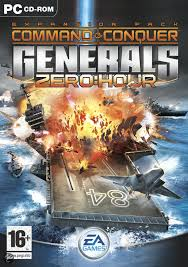

Evelyn rework
command and conquer is een oud spel uit 2006 en blijft voor mij een geweldig spel dit spel heeft vele versies waar van mijn lievelings versie generals zero:hour in dit spel heb je 3 team GLA, USA en CHINA ook hebben deze team weer teams onder hun bij voorbeeld china heeft nuclear en USA heeft laser en GLA heeft Toxic en zo wordt deze game dan ook leuk je hebt mappen met 8 teams en allemaal tegen elkaar of geteamed dit spel is zeer strategisch en is vaak al tegen bots heel moeilijk te winnen dit spel heeft meerdere opties
meer weten over command and conquer click here